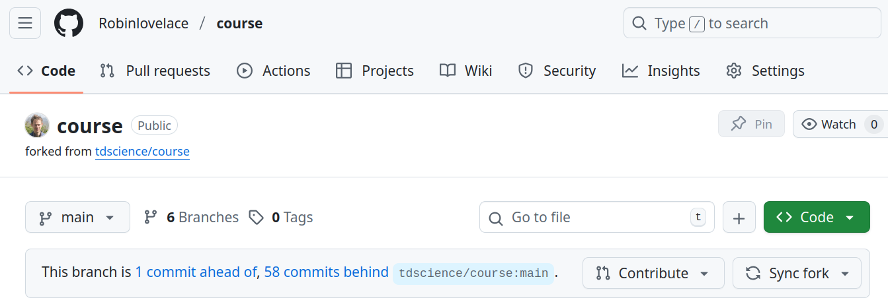
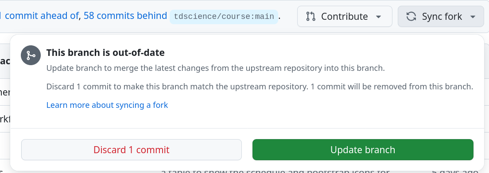
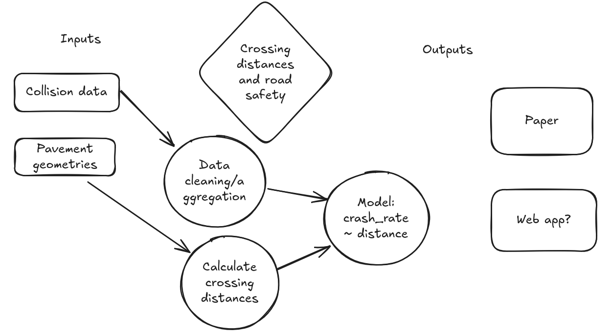

Tools and Skills for Reproducible Transport Research
Day 2
Juan Fonseca ![]()
University of Leeds
September 9, 2025
Introduction
Course overview (see schedule)
Day 1 (recap)
- Development environments, 2) Sharing code (Git/GitHub), 3) Introduction to Quarto 4) Cross-references and citations with Quarto
Day 2
- 09:30-10:30 Drafting a reproducible paper
- 10:45-12:30 Generating reproducible publication-quality visualisations
- 13:30-14:30 Editing other people’s work
- 14:45-16:00 Working on papers -> Presentations and wrap-up
Recap of Day 1
You’ve forked a repo, now what?
Syncing your fork
You can sync your fork with the.. “Sync fork” button.
Click “Update branch”.
Update branch
Click “Update branch”.
After syncing:
This branch is 2 commits ahead of, 3 commits behind tdscience/course:main.How to do this with the gh cli: use gh repo sync.
Example usage from this morning showing how to deal with merge conflicts:
robin@robin-Apollo:~/github/robinlovelace$ gh repo clone course
fatal: destination path 'course' already exists and is not an empty directory.
failed to run git: exit status 128
robin@robin-Apollo:~/github/robinlovelace$ cd course/
robin@robin-Apollo:~/github/robinlovelace/course$ git log -n 2
commit c4b203b33714390e1d7d380ddc8d8ef1d4aeb131 (HEAD -> main, origin/main, origin/HEAD)
Author: robinlovelace <rob00x@gmail.com>
Date: Mon Sep 8 14:22:47 2025 +0100
Update people.csv
commit 32b3c1dd0acae412eefc051abb67c723725c0caa (upstream/main, upstream/HEAD)
Merge: ae4354e c561743
Author: Robin Lovelace <Robinlovelace@users.noreply.github.com>
Date: Mon Sep 8 14:07:26 2025 +0100
Merge pull request #42 from tdscience/Robinlovelace-patch-1
Fix capitalization of 'Red kite' in people.csv
robin@robin-Apollo:~/github/robinlovelace/course$ gh repo sync
can't sync because there are diverging changes; use `--force` to overwrite the destination branch
robin@robin-Apollo:~/github/robinlovelace/course$
robin@robin-Apollo:~/github/robinlovelace/course$
robin@robin-Apollo:~/github/robinlovelace/course$ gh repo sync --force
✓ Synced the "main" branch from "tdscience/course" to local repository
robin@robin-Apollo:~/github/robinlovelace/course$ git pull
hint: You have divergent branches and need to specify how to reconcile them.
hint: You can do so by running one of the following commands sometime before
hint: your next pull:
hint:
hint: git config pull.rebase false # merge
hint: git config pull.rebase true # rebase
hint: git config pull.ff only # fast-forward only
hint:
hint: You can replace "git config" with "git config --global" to set a default
hint: preference for all repositories. You can also pass --rebase, --no-rebase,
hint: or --ff-only on the command line to override the configured default per
hint: invocation.
fatal: Need to specify how to reconcile divergent branches.
robin@robin-Apollo:~/github/robinlovelace/course$ git config pull.rebase false
robin@robin-Apollo:~/github/robinlovelace/course$ git pull
Auto-merging data/people.csv
Merge made by the 'ort' strategy.
data/people.csv | 2 +-
1 file changed, 1 insertion(+), 1 deletion(-)Topic selection
Mind-mapping tools including pen and paper and online tools such as excalidraw.
An advantage with Excalidraw is that you can instantly share your mindmap and collaborate with others.
See https://excalidraw.com/#room=cf5501f9193c8345ee2d,h6D4Ddxni6JBK0dg0m2aZQ for an example mindmap.
Exercises
Generate a ‘mind map’ of a topic of interest to you
- Go to excalidraw and start sketching an idea, including inputs and outputs
- Bonus: discuss with a partner and get feedback
Create a reproducible paper skeleton
Create a file called paper.qmd in your project folder, and add the following content:
Add headings with the following structure:
Add your mindmap to the paper as Figure 1
- Export your mindmap from excalidraw as a PNG or JPG file or take a screenshot
- Save the image in a folder called
imagesin your project folder, or paste it into the paper while in visual mode - Add it to your paper under the Introduction section, with a caption